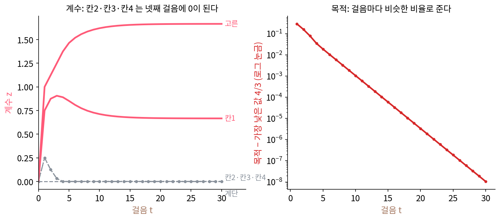

ISTA: 경사 한 스텝, 소프트 스레숄딩 한 번
계수가 하나면 소프트 스레숄딩 한 번으로 L1 답이 나왔다. 축이 서로 직교해도 계수마다 따로 소프트 스레숄딩을 씌우면 된다. 그런데 네 칸 신호의 축 여섯 개는 서로 겹친다. 칸1과 고른 축의 내적은 ½이라, 칸1의 계수를 바꾸면 고른 축의 계수가 맞춰야 할 남은 신호도 바뀐다. 이럴 때 늘 쓰는 방법은 목적의 그래디언트를 따라 조금씩 내려가는 경사하강이다. 하지만 L1 페널티 |zⱼ|는 0에서 꺾여 그래디언트가 정해지지 않고, 그래디언트를 따라 내려가는 스텝은 계수를 정확히 0에 내려놓지도 못한다. 매끈한 맞추기 항과 꺾인 페널티 항을 따로 다룰 수는 없을까?
역사: 영상 복원에서 나온 되풀이
2003년 도브시(Ingrid Daubechies)·데프리즈(Michel Defrise)·데 몰(Christine De Mol)은 흐려진 영상을 되살리는 것 같은 선형 역문제를 다루고 있었다. 되살릴 대상이 미리 정한 직교 축(웨이블릿 축 같은)에서 희소하다고 볼 때, 흔히 쓰는 제곱합 페널티 대신 계수의 절댓값 합(넓게는 p제곱 합, 1 ≤ p ≤ 2)을 페널티로 써도 문제가 안정적으로 풀리는지가 물음이었다. 계산법으로 그들은 오래된 되풀이 하나에 작은 손질을 했다. 최소제곱을 경사 한 스텝씩 푸는 랜드베버 되풀이의 스텝마다 계수에 문턱을 씌운 것이다. 그들은 이 되풀이가 답으로 모인다는 것을 증명했고, 논문은 2003년 arXiv에, 2004년 『Communications on Pure and Applied Mathematics』에 실렸다.
이 되풀이는 단순해서 큰 문제에도 쓸 수 있었지만 느리다는 것도 곧 알려졌다. 2009년 벡(Amir Beck)과 테불(Marc Teboulle)은 이것을 ISTA(되풀이 줄이기–문턱 알고리즘)라 부르며 같은 단순함에 더 빠른 수렴을 얹은 FISTA를 내놓았다.
네 칸 신호를 세 스텝 손으로
생각은 이렇다. 맞추기 항 ½‖x − Az‖²만 보고 경사 한 스텝을 간 뒤, 옮겨 간 계수에서 L1 페널티만 보고 수 하나 문제를 칸마다 푼다. 수 하나 문제의 답이 소프트 스레숄딩이었으므로, 둘째 단계는 칸마다 소프트 스레숄딩 한 번이다.
맞추기 항의 그래디언트는 −Aᵀ(x − Az)다. 남은 것(잔차) r = x − Az(지금 계수로 되살리고 남은 신호)를 쓰면 −Aᵀr이다. 스텝 크기 η로 한 스텝 가면 z + ηAᵀr이 되고, 여기에 문턱 ηλ의 소프트 스레숄딩을 씌운다. 문턱이 λ가 아니라 ηλ인 것은 스텝 크기만큼만 페널티를 치르기 때문이다. 스텝 크기는 A의 가장 큰 특잇값 σ₁에서 정한다. 이 딕셔너리는 고른 축과 계단 축이 서로 직교하고 길이가 1이라 AAᵀ의 고윳값이 2, 2, 1, 1이고, σ₁² = 2이므로 η = 1/σ₁² = ½로 둔다. λ = ½이면 문턱은 ¼이다.
처음 계수는 모두 0이다. ISTA의 첫 스텝에서는 되살린 것이 0이므로 남은 것이 신호 자신 (2, 1, 1, 1)이다. 축마다 내적을 구하면 Aᵀr = (2, 1, 1, 1, 5/2, 1/2)이다. 고른 축의 내적은 (2 + 1 + 1 + 1)/2, 계단 축은 (2 + 1 − 1 − 1)/2이다. ½을 곱해 더하면 (1, ½, ½, ½, 5/4, ¼)이고, 문턱 ¼을 씌우면 칸마다 ¼씩 줄고 ¼ 이하인 계단은 0이 된다. 계속하면 아래 표가 된다(분수 계산은 sources/sparse-coding/s3_ista.py).
| 스텝 | 남은 것 r = x − Az | z + ηAᵀr | 문턱 ¼ 뒤의 z (칸1, 칸2, 칸3, 칸4, 고른, 계단) | 목적 |
|---|---|---|---|---|
| 0 | (없음) | (없음) | (0, 0, 0, 0, 0, 0) | 7/2 = 3.500 |
| 1 | (2, 1, 1, 1) | (1, 1/2, 1/2, 1/2, 5/4, 1/4) | (3/4, 1/4, 1/4, 1/4, 1, 0) | 13/8 = 1.625 |
| 2 | (3/4, 1/4, 1/4, 1/4) | (9/8, 3/8, 3/8, 3/8, 11/8, 1/8) | (7/8, 1/8, 1/8, 1/8, 9/8, 0) | 191/128 = 1.492 |
| 3 | (9/16, 5/16, 5/16, 5/16) | (37/32, 9/32, 9/32, 9/32, 3/2, 1/16) | (29/32, 1/32, 1/32, 1/32, 5/4, 0) | 723/512 = 1.412 |
칸2~칸4의 계수는 ¼, ⅛, 1/32로 줄고, 넷째 스텝에서 0이 되어 그 뒤로 다시 살아나지 않는다. 고른 축이 바탕 1을 가져갈수록 칸2~칸4 쪽으로 남는 신호가 문턱보다 작아지기 때문이다. 목적은 스텝마다 준다. 이 되풀이를 ISTA (경사 한 스텝 + 소프트 스레숄딩 한 번의 되풀이, iterative shrinkage-thresholding algorithm)라 한다.

16스텝이면 모든 계수가 답에서 0.01 안으로, 32스텝이면 0.0001 안으로 들어온다. 답과의 차이는 열 스텝마다 약 0.056배로 준다. 경사 스텝은 쓰이는 두 축의 겹침이 정하는 비율로 차이를 줄여 가고, 소프트 스레숄딩은 차이를 늘리지 않는다. 그래서 되풀이가 한 점으로 모인다. 그 까닭의 바탕은 「배율이 1보다 작은 함수를 되풀이하면 한 점으로 모인다」는 축약 사상의 성질이다.
ML에서: ISTA 한 스텝은 신경망의 한 층처럼 생겼다
ISTA의 한 스텝을 다시 보면, 지금 계수 z에 행렬을 곱하고, 신호 x에서 온 값을 더하고, 칸마다 같은 비선형 함수(소프트 스레숄딩)를 씌운다. 행렬 곱 + 바이어스 + 칸마다의 활성화 함수는 신경망 층 하나의 꼴이다. 계수가 음수가 되지 않게 묶으면 소프트 스레숄딩은 ReLU에 문턱을 빼 준 것과 같아진다. 그러니 ISTA를 K스텝 돌리는 것은 같은 층을 K번 쌓은 신경망에 신호를 통과시키는 것과 같다. 이 닮음을 진지하게 받아들여 층마다의 행렬과 문턱을 학습시키면 무슨 일이 생기는지는 층을 최적화의 스텝으로 읽는 이야기에서 다룬다. ISTA 한 스텝이 정확히 어떤 층과 같은지는 아래 문제 9에서 직접 확인한다.
문제 7. 샤워 온도 레버
샤워기 물이 30도이고 원하는 온도는 38도다. 온도 레버를 1칸 돌리면 2도 오르는데, 처음 쓰는 샤워기라 이 감도를 모른다. 매번 「남은 온도 차(도) × 배율」칸만큼 레버를 돌린다(반 칸도 돌릴 수 있다). (가) 배율 0.5, 1.0이면 온도가 어떻게 바뀌는가? (나) 배율을 0.25, 0.6, 1.2로 하면? (다) 온도 차가 줄어들려면 배율이 어느 범위여야 하는가?

배율 0.5면 8도 차이에 4칸, 1칸에 2도니까 8도 올라서 38도. 한 번에 끝나요. 배율 1.0이면 8칸, 16도 올라서 46도예요.

한 번 더 돌려 볼까요? 46도에서는 차이가 −8도예요.

그럼 8칸 내려서 30도… 30도, 46도, 30도, 46도. 영원히 왔다 갔다 해요.

차이에 곱해지는 수로 보면 쉬워. 한 번 돌리면 차이가 (1 − 2 × 배율)배가 돼. 배율 0.5면 0이라 한 번에 끝나고, 1.0이면 −1이라서 그대로 진동해. 0.25면 0.5배라 34, 36, 37도로 천천히 다가가고, 0.6이면 −0.2배라 39.6도로 넘쳤다가 37.68도로 돌아오며 줄어. 1.2면 −1.4배라 49.2, 22.32, 59.95도로 점점 커져.

그래서 (다)의 답은요?

|1 − 2 × 배율| < 1, 곧 0 < 배율 < 1이에요. 레버 감도(1칸에 2도)가 클수록 배율을 작게 잡아야 해요. 감도를 모르면 작게 시작하는 게 안전하고요.

처음 가는 PC방 의자 높이 맞출 때 레버를 확 당기면 쿵 내려가잖아요. 한 번에 다 맞추려다 넘치는 거네요.
문제 8. ISTA 의 스텝 크기를 키우면
네 칸 신호 문제(λ = 0.5)를 ISTA로 푼다. σ₁² = 2라서 본문은 η = 0.5를 썼다. (가) η = 0.5, 1.1, 1.3, 1.5로 200스텝을 돌리면 각각 어떻게 되는가? (나) 샤워 온도 레버 문제(문제 7)와 같은 셈으로 (가)에서 본 수렴, 진동, 발산을 설명하라. (위젯 2의 단추로 η를 바꿔 확인해 보자.)
위젯으로 돌려 보니까 0.5는 답 (0.667, 0, 0, 0, 1.667, 0)으로 가요. 1.1도 같은 답으로 가요. 1.3은 (1.95, 0.65, 0.65, 0.65, 2.6, 0)과 모두 0 사이를 영원히 오가고, 1.5는 스텝 6에서 목적이 240이 되더니 터져요.
샤워 온도 레버에서는 1칸에 2도라는 감도가 차이에 곱해지는 수를 정했어요. ISTA 에서는 무엇이 그 감도죠?
맞추기 항의 곡률, 곧 AᵀA의 고윳값이에요. 경사 스텝 하나에 차이가 (1 − η × 고윳값)배가 되니까, 가장 큰 고윳값 2에서 |1 − 2η| < 1이어야 해요. η < 1이요.

그런데 이상해요. 1.1은 η < 1 을 어겼는데 답으로 갔어요.

그 문제에서 실제로 쓰이는 축은 어느 것이었죠?
답이 칸1과 고른 축만 쓰니까… 칸1과 고른 축의 겹침만 중요하겠네요. 두 축의 그람 행렬 [[1, ½], [½, 1]]의 고윳값은 1.5와 0.5예요. 1.1이면 1 − 1.5 × 1.1 = −0.65라서 줄어들어요. 운이 좋았던 거네요. 1.3이면 −0.95라 거의 진동하다가 문턱이 계수를 모두 0으로 보냈다 되돌리기를 되풀이하고, 1.5면 −1.25라 터져요.

그래요. η ≤ 1/σ₁²는 어떤 신호, 어떤 λ에서도 목적이 스텝마다 줄어드는 것을 보장하는 값이에요. 그보다 크면 문제에 따라 될 수도 안 될 수도 있어요.
조교님이 「제출 기한 하루 넘겨도 받아 준 적 있다」고 해서 늘 받아 주는 건 아니잖아요. 보장은 0.5까지고, 1.1은 그날 운이었던 거예요.
문제 9. ISTA 한 스텝과 ReLU 층
계수가 음수가 되지 않게 묶은 ISTA의 한 스텝은 z ← ReLU(z + ηAᵀ(x − Az) − ηλ)이다. (가) 이 한 스텝을 ReLU(Wz + Ux + 바이어스) 꼴로 적으면 W, U, 바이어스는 무엇인가? (나) 네 칸 신호(η = λ = 0.5)에서 z = 0으로 시작한 ISTA 첫 스텝의 값은? (다) z = 0에서 시작한 ISTA 첫 스텝은 신경망의 어떤 층과 같은 꼴인가?
묶어서 정리하면 W = I − ηAᵀA, U = ηAᵀ, 바이어스는 칸마다 −ηλ = −0.25예요.
(나)는요? 앞의 손계산 표와 견줘 봐요.
z = 0이면 Wz가 사라져서 ReLU(ηAᵀx − 0.25)예요. ηAᵀx = (1, 0.5, 0.5, 0.5, 1.25, 0.25)니까 (0.75, 0.25, 0.25, 0.25, 1, 0). 표의 스텝 1이랑 똑같아요.
이 신호는 계수가 다 음수가 아니라서 그래. 신호 (0, 0, 2, 2)를 넣으면 부호 있는 ISTA 답은 계단 계수가 −0.75로 음수인데, 음수를 막은 쪽은 (0, 0, 1.5, 1.5, 0, 0)으로 다른 답이 나와. 묶음 하나가 답을 바꿔.
좋은 지적이에요. 그럼 (다)는요? 신호를 받아 행렬을 곱하고 바이어스를 더해 ReLU를 씌우는 층이요.

층 하나짜리 인코더예요! ReLU(Ux + b). 오토인코더 과제에서 짰던 그거요. 인코더 하나가 ISTA 한 스텝이었네요.

수치해석에서 반복법을 한 번만 돌린 값을 「첫 근사」라고 불렀는데, 인코더 한 층은 희소 코드의 첫 근사야.